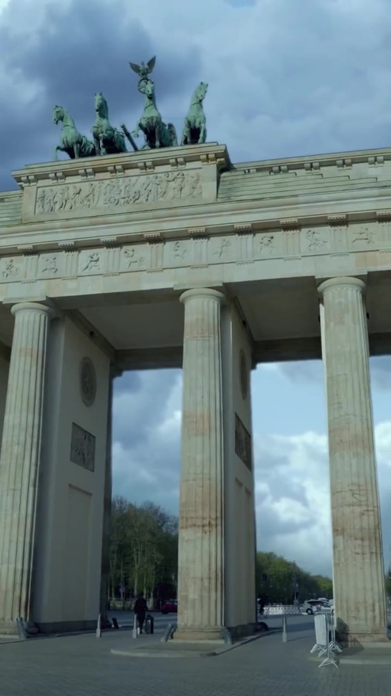
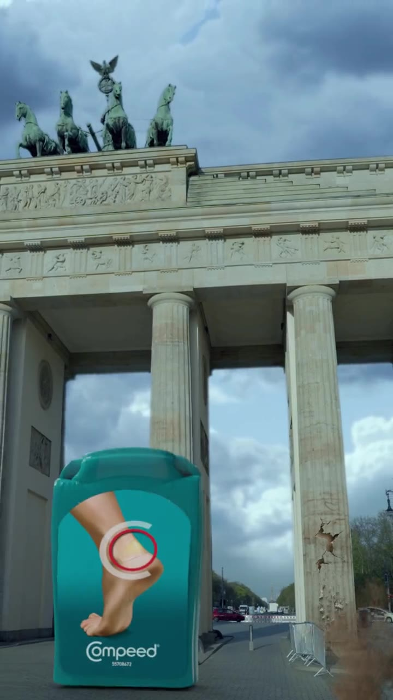
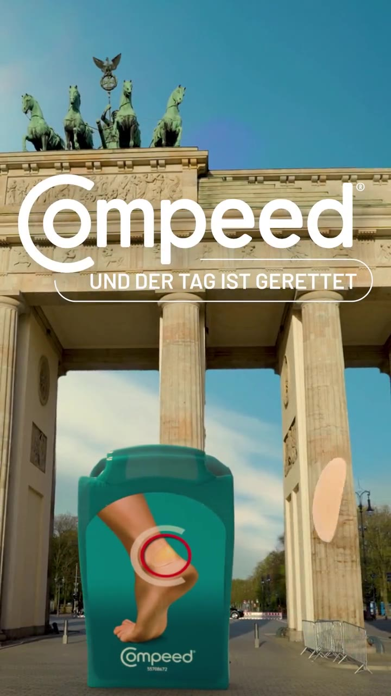

A CGI spectacle staged in the real world, the billboard Compeed never bought, built to earn the reach money can't.
Year
2023
Industry
Health · Consumer Care
Work
CGI Compositing, Motion, Edit
Format
FOOH · 9:16 · 10s
Faux out-of-home lives or dies on one thing: the three seconds where your brain believes it. Real footage of a real landmark, an impossible event composited in with total physical credibility, and by the time you realise it can’t be real, you’ve already decided to share it.
01Objective
Earn organic reach for a blister plaster, a product nobody talks about, with attention that media money can’t buy.
02Idea
Compeed fixes damage. So let it fix a landmark: a monument starts to crumble on camera, and a giant Compeed arrives to save it, “Und der Tag ist gerettet” (and the day is saved).
03Execution
CGI integration and finish: the installation matched into the location plate, light, scale, shadow, atmosphere, dust and debris sold with physical weight, edited to documentary pacing so the trick lands before the logic catches up.
04Result
A published FOOH spectacle built for shares, hyperreal enough to stop the scroll, branded enough that the save belongs to Compeed.
Ten seconds, three acts, how a monument gets in trouble and a plaster becomes the hero.


